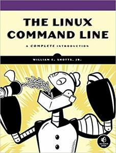

Everyone:
Next week, we will explore some basic networking utilities and then begin learning about shell scripting. That is, we will go from interactively controlling the Unix shell to utilizing the shell as a full-fledged programming language with variables, conditional statements, loops and even functions.
TL;DR¶
The focus of this reading is some basic networking tools and an introduction to shell scripting in bash.
Readings¶
The readings for next week are:
-
The Linux Command Line (Tools):
- Chapter 16 - Networking
- Chapter 17 - Searching For Files
The Linux Command Line (Scripting):
- Chapter 24 - Writing Your First Script
- Chapter 25 - Starting A Project
- Chapter 26 - Top-Down Design
- Chapter 27 - Flow Control: Branching With If
- Chapter 29 - Flow Control: Loopning With While and Until
- Chapter 30 - Troubleshooting
- Chapter 31 - Flow Control: Branching With Case
- Chapter 32 - Positional Parameters
- Chapter 33 - Flow Control: Looping With For
For a shorter version of the scripting chapters, you can read Writing Shell Scripts instead. However, the chapters above are listed to serve as a reference should you need them (they do a more thorough job of explaining the material).

Optional Resources¶
The following are additional resources that you may find useful:
Shell Scripting¶
Terminal Multiplexer¶
A tool that will be demonstrated in class, but not assessed in the reading quiz or homework is tmux, which is one of the most game-changing programs you could ever learn:
Although not required, it is highly recommended that you learn how to use tmux.
Quiz¶
Once you have completed the readings, answer the following Reading 02 Quiz questions:
Testing¶
To verify the correctness of your
exists.shscript, you should be able to reproduce the following:$ ls -l # List files in reading02 directory total 8.0K -rw-r--r-- 1 pbui pbui 23 Jan 18 15:39 README.md -rw-r--r-- 1 pbui pbui 144 Jan 28 13:37 answers.json -rwxr-xr-x 1 pbui pbui 254 Jan 28 18:02 exists.sh $ ./exists.sh * && echo Success # Run script and check error code answers.json exists! exists.sh exists! README.md exists! Success $ ./exists.sh * ASDF || echo Success # Run script and check error code answers.json exists! exists.sh exists! README.md exists! ASDF does not exist! SuccessSubmission¶
To submit your work, follow the same process outlined in Reading 01:
$ git switch master # Make sure we are in master branch $ git pull --rebase # Make sure we are up-to-date with GitHub $ git switch -c reading02 # Create reading02 branch and check it out $ cd reading02 # Go into reading02 folder $ $EDITOR answers.json # Edit your answers.json file $ ../.scripts/check.py # Check reading02 quiz Checking reading02 quiz ... Q1 10.00 / 10.00 Q2 5.00 / 5.00 Q3 4.00 / 4.00 Q4 3.00 / 3.00 Q5 11.00 / 11.00 -------------------- Score 33.00 / 33.00 Grade 1.00 / 1.00 Status Success $ git add answers.json # Add answers.json to staging area $ git commit -m "Reading 02: Quiz" # Commit work $ git push -u origin reading02 # Push branch to GitHubAcknowledgments¶
If you collaborated with any other students, or received help from TAs or AI tools on this assignment, please record this support in the
README.mdin thereading02folder and include it with your Pull Request.Graders¶
Once you have committed your work and pushed it to GitHub, remember to create a pull request and assign it to the appropriate teaching assistant from the Reading 02 TA List.
Note: this list changes each week, so be sure to consult the appropriate list for each assignment.